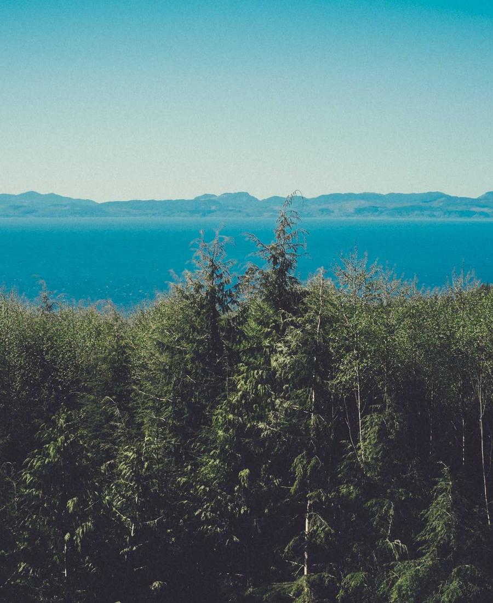
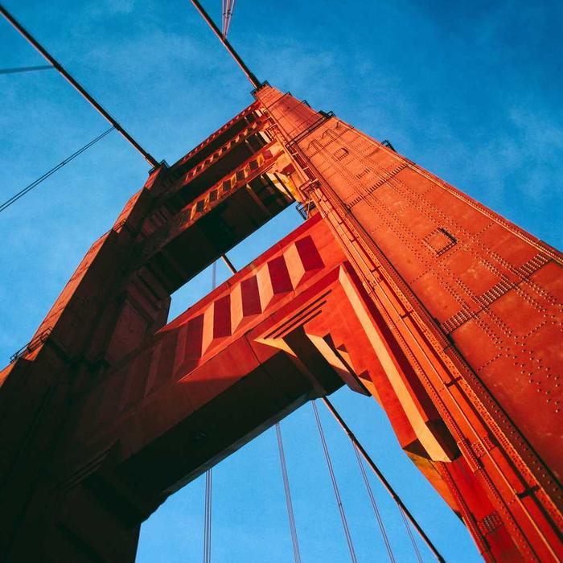
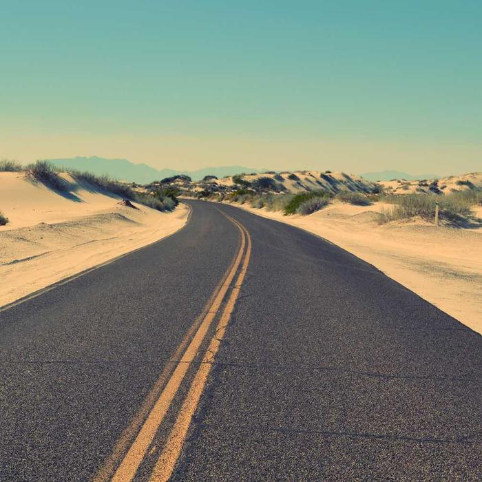
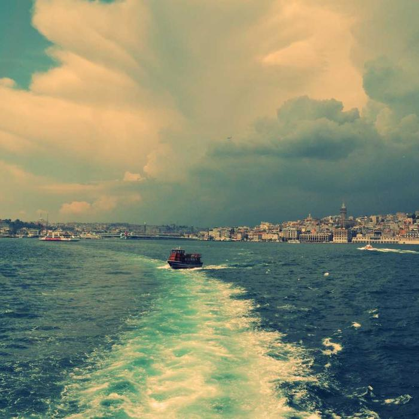

Брови, губы и веки, которые выглядят естественно и держатся годами
Работаю мастером перманентного макияжа более 6 лет. Подбираю форму и оттенок под черты лица, использую качественные пигменты и стерильные материалы — результат аккуратный, без «эффекта татуажа из 2000-х».

Почему выбирают меня
Опыт более 6 лет
Работаю только по одной специализации — перманентный макияж. Знаю, как ведёт себя пигмент на разных типах кожи и через сколько месяцев понадобится коррекция.
Индивидуальный подбор формы
Перед процедурой рисую эскиз на лице, подбираю форму под анатомию и оттенок под тон кожи и волос — результат выглядит как «свои, но лучше».
Стерильность и расходники
Одноразовые иглы и расходные материалы, сертифицированные пигменты. Кабинет оборудован по нормам для косметологических процедур.
Забота после процедуры
Даю подробный план заживления и остаюсь на связи в Telegram — если что-то беспокоит, отвечу и подскажу, что делать.
Коррекция удаления
Если остался неудачный татуаж от другого мастера — работаю с лазерным и химическим удалением пигмента перед новой процедурой.
Удобная запись
Записываю через форму на сайте или напрямую в Telegram — подберу время в ближайшие дни, кабинет в центре Иркутска.
Услуги
Три направления перманентного макияжа и удаление неудачных работ прошлых мастеров.

Перманентный макияж бровей
Волосковая или пудровая техника — форма и плотность растушёвки под ваши черты лица.
от 6 000 ₽Перманентный макияж губ
Коррекция контура, выравнивание асимметрии, натуральный или более выразительный оттенок.
от 6 000 ₽
Перманентный макияж век «межресничка»
Прокрашивание межресничного пространства — взгляд выразительнее без ежедневной подводки.
от 4 000 ₽
Удаление татуажа / ПМ
Лазером или ремувером — если остался неудачный татуаж от другого мастера или пигмент нужно свести.
от 1 500 ₽Прайс-лист
Коррекция проводится через 4–6 недель после основной процедуры — рекомендую не пропускать её для стойкого результата. Точную стоимость и количество сеансов удаления скажу на консультации, глядя на текущий татуаж.
Как проходит процедура
Консультация
Обсуждаем пожелания, смотрю тип кожи, отвечаю на вопросы, вместе выбираем форму и оттенок.
Эскиз на лице
Рисую форму бровей / контур губ / линию века прямо на лице — утверждаем эскиз перед началом.
Анестезия
Наношу обезболивающий крем, ждём действия — процедура проходит комфортно.
Процедура
Ввод пигмента по утверждённому эскизу, время зависит от зоны — обычно 1,5–2,5 часа.
Уход и коррекция
Даю памятку по заживлению, остаюсь на связи. Через 4–6 недель — коррекция для стойкого результата.
Работы
Часть работ из портфолио — брови, губы, межресничка и оборудование для удаления пигмента.
Частые вопросы
Больно ли делать перманентный макияж?
Перед процедурой наношу анестезирующий крем, дискомфорт минимальный. Ощущения сравнимы с лёгким покалыванием, а не с болью.
Сколько держится результат?
В среднем 1,5–3 года в зависимости от типа кожи, ухода и зоны. Коррекция через 4–6 недель после первой процедуры продлевает стойкость.
Нужна ли коррекция и сколько она стоит?
Да, коррекция через месяц-полтора — это часть процедуры, а не отдельная работа с нуля. Стоимость коррекции ниже основной процедуры, см. прайс-лист.
Можно ли перекрыть неудачный татуаж от другого мастера?
Сначала нужно свести старый пигмент — лазером или ремувером, обычно за 1–3 процедуры с перерывом. После этого делаем новый перманентный макияж.
Есть ли противопоказания?
Беременность и кормление, склонность к келоидным рубцам, острые воспаления кожи в зоне работы, приём антикоагулянтов. Полный список уточню на консультации.
Как ухаживать после процедуры?
Выдаю подробную памятку: чем обрабатывать, что нельзя делать первые дни (баня, бассейн, солнце), и остаюсь на связи в Telegram на весь период заживления.
Записаться на консультацию
Оставьте заявку — свяжусь в течение дня, подберём удобное время и обсудим детали процедуры.